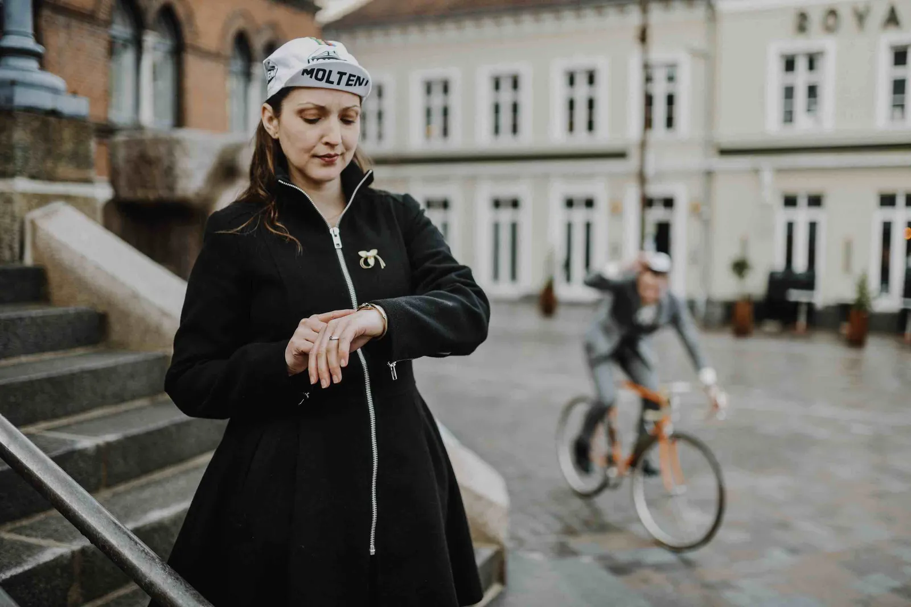
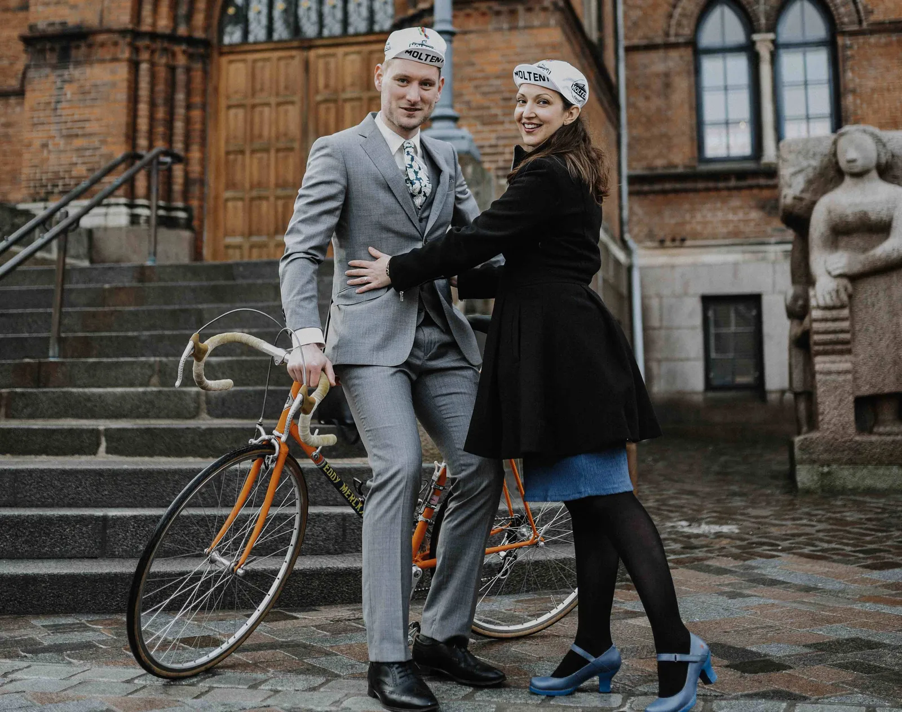
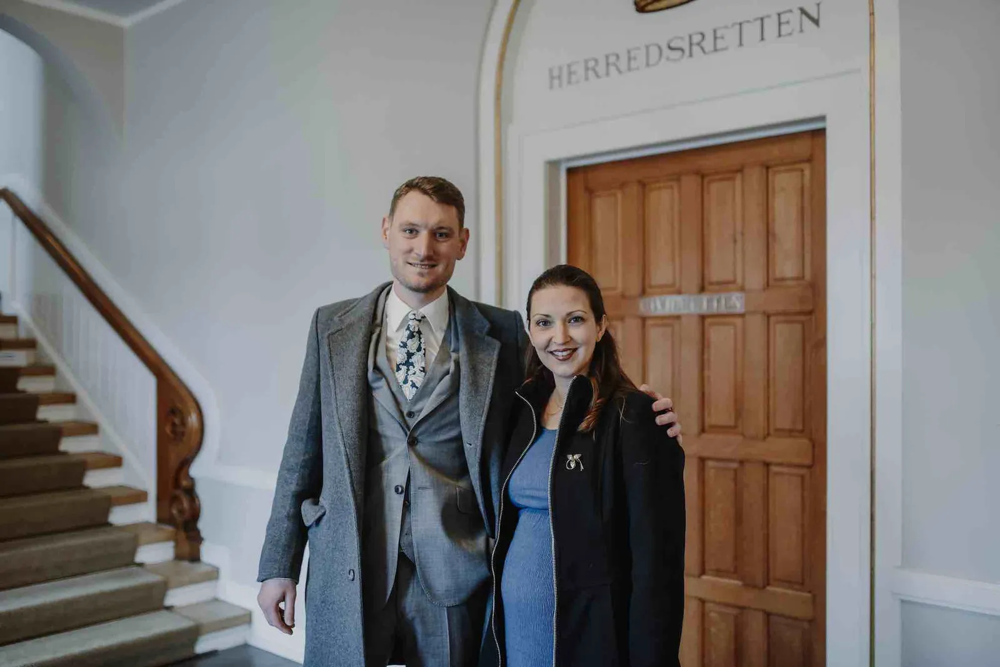

Løjtnanten og Torta-Mamma

Klokken er 14.40. Løjtnant Kasper Sørensen kæmper sig frem i modvinden. Kaptajnen havde sagt, at han sagtens kunne nå at træne 120 km inden… Men der er stadig godt 20 km til Vejle.
Kasper skal nå det. Han har en aftale med Maria kl 15.00. Havde det ikke været for jakkesættet, havde han let kunne holde farten – og endda være fremme i god tid. En hurtig udregning siger, at han bliver nødt til at køre À bloc for at nå det…
Maria står og venter. Det er ikke første gang. Hun er vant til at vente på Kasper. Men lige præcis i dag havde hun sådan håbet, at han ville komme til tiden. Ja, måske endda lidt før…
Klokken er 14.50. Kasper er nået til Munkebjerg. Han ved præcis hvordan han skal skære svingene på nedkørslen. Han satser lidt i de sidste to sving – det går godt! Nu er han nede på Strandvejen. Vinden kommer bagfra, så han smiden kæden ud i 11’eren – og kadencen er nu på den gode side af 110…
Maria ser op på Rådhusuret. Om 5 minutter! Kasper har lovet.
Hun ser ned. Frakken kunne hun næsten ikke få lynet i dag. Det går stærkt nu…


Klokken er 14.57 da Kasper rammer pavéen der fører hen til rådhuset. De glatte brosten er lige ved at koste et styrt. Men Kasper redder den. Han når frem – og dér står hun. Hans livs kærlighed: Maria Torta-Mamma.


– Kasper! Åhh, min Kasper. Maria omfavner Kasper. Du nåede det.
– Vi nåede det…
Kasper og Maria har kørt side om side – lige siden de mødte hinanden som helt unge. Stagiaires i hinandens liv – men uden fast kontrakt.
Det har de nu. I dag skrev de under. Fra i dag kører de parløb på kontrakt. Frem mod resten af livet som par – og lille familie…
L’amore – Kasper & Maria ❤

